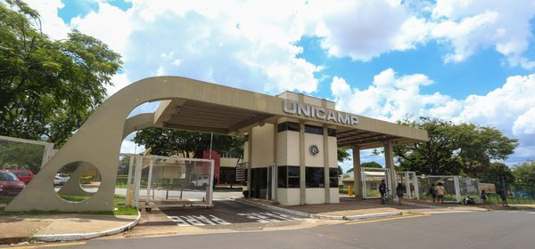

Objetivos da Disciplina
A disciplina tem como objetivo geral colocar em perspectiva a programação para a web, capacitando o aluno a entender tanto o lado do cliente (navegador) quanto o lado do servidor. Os objetivos específicos são:
- Colocar em perspectiva a programação para a Web;
- Capacitar o aluno a compreender as principais linguagens de marcação e de estilo;
- Capacitar o aluno a compreender e desenvolver scripts para execução em navegadores;
- Capacitar o aluno a compreender e desenvolver scripts para execução em servidores web.

Portaria de entrada da Unicamp.
Competências Desenvolvidas
Ao final do semestre, espera-se que o aluno tenha desenvolvido as seguintes competências:
- Compreensão do funcionamento de aplicações web baseadas em arquitetura cliente-servidor;
- Criação de páginas web estáticas baseadas em HTML e CSS;
- Desenvolvimento de páginas web dinâmicas;
- Desenvolvimento de aplicações web completas, com integração entre front-end e back-end.
Metodologia
A disciplina é composta por aulas teóricas e pelo desenvolvimento de atividades práticas no laboratório de informática. As atividades práticas incluem exercícios de fixação, feitos individualmente, e um Projeto Final, desenvolvido em grupo e entregue em três partes ao longo do semestre.